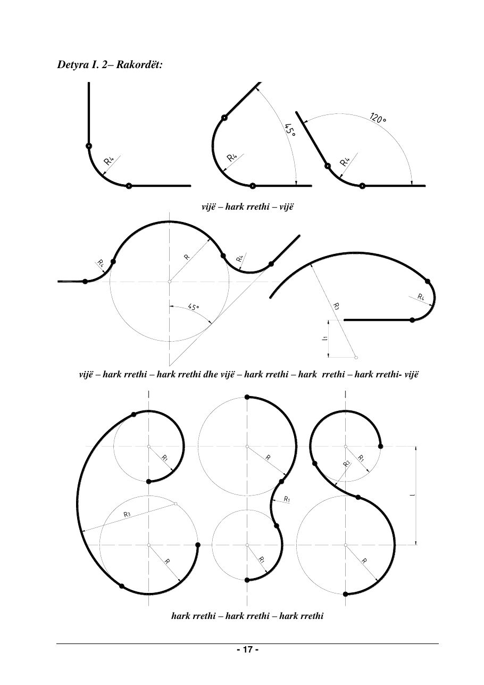
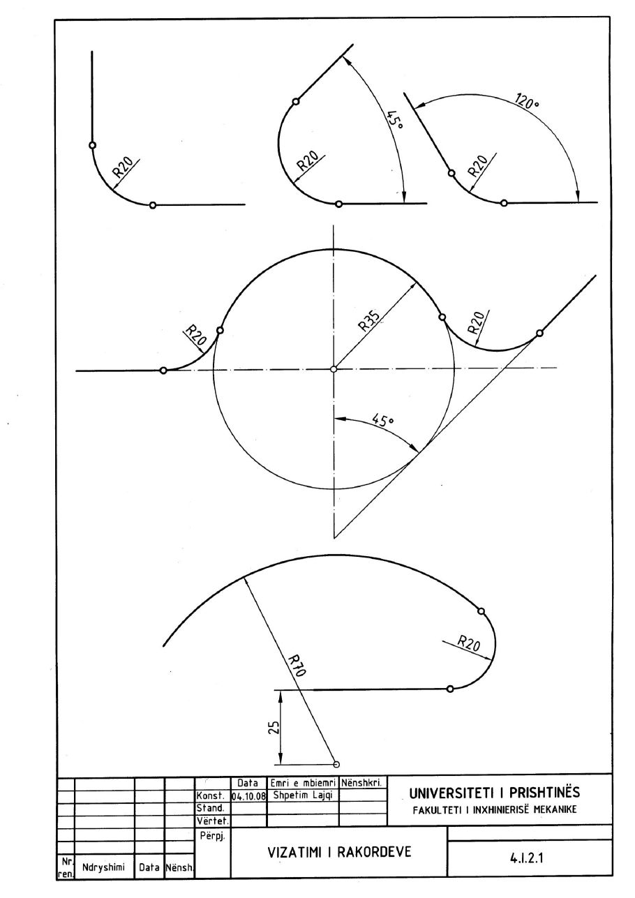
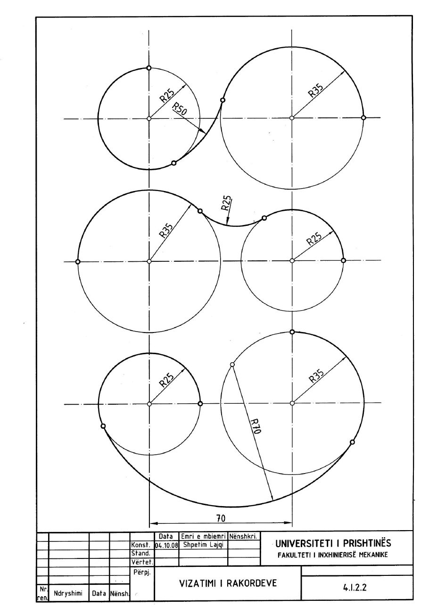

Animacioni
▶
Animacioni për këtë detyrë është në përgatitje.
Ndërkohë shiko zgjidhjen nga libri më poshtë.
Faqet e librit




Rakordët
Në formatin A4 të vizatohen rakordët e dhëna në Rastin Nr. II me të dhënat e variantit tënd (1 deri 16) nga tabela e faqes 10: vijë – hark rrethi – vijë, vijë – hark – hark – vijë dhe hark – hark – hark.
Të dhënat: R, R₁, R₂, R₃, R₄, l dhe l₁ sipas variantit, në mm (tabela në faqen 10); përpjesa 1:1
Teoria: kapitulli 1.7, Konstruktimi i rakordeve (faqet 14 deri 16).
Animacioni për këtë detyrë është në përgatitje.
Ndërkohë shiko zgjidhjen nga libri më poshtë.


